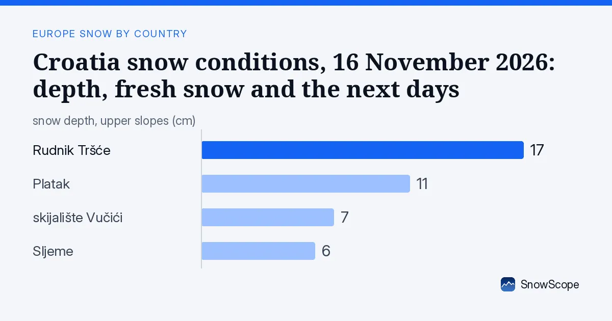

Croatia loses half its snow cover in one day as thaw reaches 1,500 m
A warm day on 16 November cut Croatia's snow cover almost in half, from 1,830 km2 to 880 km2. The thaw pushed the snow line up to 1,500 m, leaving bare ground across the lower hills and only patchy white above that altitude.
See the live snow forecast for Rudnik Tršće in the SnowScope appSnow depth, powder alerts and the 3D map, free.
Where the snow went
Yesterday's mild air mass swept across the country and erased 950 km2 of measured snow in just 24 hours. Our snow model shows this rapid retreat clearly: the snow-covered area dropped from nearly 21 per cent of Croatia's mountains to just 10 per cent today.
The thaw was not uniform. Between 1,500 and 2,000 m, mean depth stayed at 2 cm and coverage held at 59 per cent. Below 1,500 m, almost all snow vanished. The band from 1,000 to 1,500 m now has just 16 per cent cover, and below 1,000 m only 8 per cent remains—mostly isolated patches on north-facing slopes.
| Resort | Snow depth | New snow, 72 h | Coming, next days | Top |
|---|---|---|---|---|
| Rudnik Tršće | 17 cm | 0 cm | 0 cm | 1,019 m |
| Platak | 11 cm | 0 cm | 0 cm | 1,354 m |
| skijalište Vučići | 7 cm | 0 cm | 0 cm | 402 m |
| Sljeme | 6 cm | 0 cm | 0 cm | 1,029 m |

Snow depth by altitude
Height matters now. Rudnik Tršće, at 1,019 m, still holds 17 cm at its measuring station—the deepest snow in Croatia today. Platak, higher at 1,354 m, shows 11 cm. Both sit near or just above the snow line.
Below that, conditions are thin. Sljeme, at 1,029 m, has only 6 cm. skijalište Vučići, the lowest resort at 402 m, holds just 7 cm. On early-season snow this shallow, rocks may be near the surface.
What happened this week
The melt happened fast, but snow cover has grown since last week. On 9 November, only 40 km2 of Croatia was white. Today it is 880 km2—a gain of 840 km2 in seven days. That growth came from early cold snaps and light snowfall from 10 to 15 November, before yesterday's warmth reversed the trend.
Where the best snow is now
Rudnik Tršće leads with 17 cm, followed by Platak at 11 cm. Both sit in the zone where the snow line now rests. The highest slopes of these areas, above 1,500 m, have better cover than lower runs, but depths are still modest for November.
Sljeme and skijalište Vučići are marginal—6 and 7 cm respectively. These lower resorts will not ski well until stronger snowfall arrives.
What comes next
No fresh snow falls in the next three days. The snowiest day in the next week is 23 November, when 5 cm is forecast above 1,500 m. By late next week (24 to 30 November) a larger weather system brings up to 11 cm of new snow.
Snow will start to reach lower ground on 21 November, so the very next window for accumulation opens then. Early-season runs will fill in slowly after that.
How Croatia compares
Neighbouring Slovenia has more snow: 15 per cent cover versus Croatia's 10 per cent, with 28 cm at the leader Gače. Bosnia and Herzegovina has only 2 per cent cover but its highest peaks—around Skijalište Kozara at 24 cm—hold more snow than Croatia's best. All three countries are waiting for fresh snow to build a skiable base.
Tips for skiers
- Ski above 1,500 m if you go in the next two days. Snow at lower elevations is thin and rocky patches are likely.
- Rudnik Tršće and Platak are your best bets until 21 November. After that, watch for accumulation on higher slopes.
- Expect rapid melt if another warm day arrives. Early-season snow is fragile on mild slopes. Seek shaded, north-facing runs.
- Before going off-piste, check the latest avalanche bulletin from the relevant authority. Thin snow over steep terrain can hide hazards.
- More snow is forecast from 21 November onwards. Wait for deeper bases if you want stable skiing below 1,500 m.
About these numbers
Resort snow depths are the deepest snow on the resort's upper slopes from the SnowScope snow model (about 1 km, run of 16 November); they are estimates for an area, not a measurement at one point. Station values are measurements on the date shown. Forecasts can change. Always read the official avalanche bulletin before going off-piste.
Cite this report
For research, teaching or the press: the numbers and charts are free to reuse under CC BY 4.0 with this citation.
SnowScope (2026), Croatia loses half its snow cover in one day as thaw reaches 1,500 m, https://snowscope.app/blog/en/2026/11/croatia-snow-report-16-november-2026.html, accessed 2026-11-16
SnowScope (Atlas Labs). (2026, November 16). Croatia loses half its snow cover in one day as thaw reaches 1,500 m. SnowScope snow reports. https://snowscope.app/blog/en/2026/11/croatia-snow-report-16-november-2026.html
BibTeX
@misc{snowscope2026croatiasnowreport16novem,
author = {{SnowScope (Atlas Labs)}},
title = {Croatia loses half its snow cover in one day as thaw reaches 1,500 m},
year = {2026},
month = nov,
howpublished = {\url{https://snowscope.app/blog/en/2026/11/croatia-snow-report-16-november-2026.html}},
note = {Published 2026-11-16 20:42 UTC; accessed 2026-11-16}
}· CC BY 4.0 · Methods, data and tools →
Rudnik Tršće: snow and temperature by height, this winter vs last (tools) →
Follow Rudnik Tršće
Free: a message when fresh snow is coming, and the forecast every morning.
More snow reports

How to spend one good day at Luz-Ardiden, a small ski area above Luz-Saint-Sauveur in the Hautes-Pyrénées: the road, the two sectors, the snow of 46 past winters and which weeks to choose.

Deer Valley ski conditions on 13 November 2026: no real snow on the ground yet, about 4 in near the top from the weekend storm, rain on the low East Village side below about 6,700 to 7,600 ft, and 11 in up top over the week.